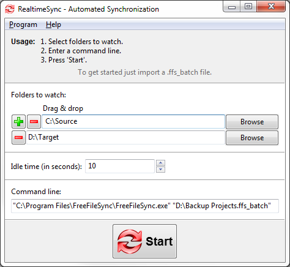

The primary purpose of RealtimeSync is to execute a command line each time a directory becomes available (e. g. insert of a USB-stick) or when it detects changes in one of the monitored directories. Usually this command line will trigger a FreeFileSync batch job.
Example: Real time synchronization - in combination with FreeFileSync
Start RealtimeSync.exe located in FreeFileSync's installation directory and enter all folders you want to monitor. Instead of doing this manually you can import a ffs_batch file via Menu → Program → Open. This not only extracts all directories relevant for synchronization but also sets up the command line to execute the ffs_batch file each time changes are detected. Now press Start to begin monitoring.

Note The
command should not
block progress. If you call a FreeFileSync batch job, make sure it does not show any popup
windows. See notes in Command Line Usage.
RealtimeSync will skip showing the main dialog and begin monitoring immediately if you pass a ffs_real configuration file or a FreeFileSync ffs_batch file
as first command line argument to RealtimeSync.exe. This helps you integrate RealtimeSync into your operating system's auto start:
RealtimeSync is not tied to starting FreeFileSync. It can also be used in other scenarios, like sending an email whenever a certain directory is modified.
"C:\Program Files\FreeFileSync\RealtimeSync.exe" "D:\Backup Projects.ffs_real"
"C:\Program Files\FreeFileSync\RealtimeSync.exe" "D:\Backup Projects.ffs_batch"
Example: Automatic synchronization when a USB stick is inserted
Save a ffs_batch configuration in the USB stick's root directory, e.g. H:\, to let RealtimeSync call it when the stick is mounted. Configure RealtimeSync as follows:
Whenever directory H:\Data becomes available, RealtimeSync executes the command line which starts the batch job located on the stick. RealtimeSync will also trigger each time files are modified in H:\Data.
Note
The full path of the last changed file and the action that triggered the
change notification (create, update or delete) are written
to the environment variables %change_path% and %change_action%.
Example: Log names of changed files and directories (Windows)
Show which file or directory has triggered a change. Enter command
line:
cmd /c echo %change_action%
"%change_path%" & pause
Write a list of all changes to a log file:
cmd /c echo %change_action% "%change_path%" >> C:\log.txt
Note
When RealtimeSync executes a Windows batch file (bat or cmd) a black console window is shown. You can hide it using the Visual Basic script
HideConsole.vbs located in FreeFileSync's installation directory:
wscript "C:\Program files\FreeFileSync\HideConsole.vbs" C:\MyBatchFile.cmd
Limitations:
If multiple changes happen at the same time, only the name of the first file is written to variable %changed_file%.
While RealtimeSync is executing the command line, monitoring is inactive and changes occurring during this time are lost.